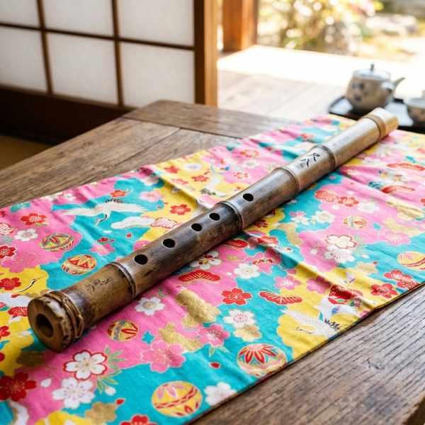

中学音楽（鑑賞曲）
鑑賞曲④ (ブルタバ・ボレロ・尺八曲「巣鶴鈴慕」)
祖国への愛を歌い上げるチェコの名曲「ブルタバ」、魔法のような管弦楽法で構築された「ボレロ」、そして日本の精神文化を象徴する尺八独奏曲「巣鶴鈴慕」の3曲を解説します。それぞれの時代背景や、楽器特有の奏法・役割を完璧に覚えましょう！
1. スメタナ「ブルタバ」 (連作交響詩「我が祖国」より)

左：作曲者スメタナの肖像画 ／ 右：曲の冒頭で川の源流のせせらぎを奏でるフルート
① 基本データ
- 作曲者：スメタナ（チェコを代表する作曲家）
- 作曲者の楽派：国民楽派（こくみんがくは）（ロマン派の時代に、自国の伝統や民謡、歴史を題材に民族精神を表現した作曲家グループ）
- 作曲された時代背景：当時、チェコはオーストリアの支配を受けていました。スメタナは祖国の愛国心を鼓舞するためにこの曲を書きました。
- 曲の種類：交響詩（こうきょうし）（オーケストラ（管弦楽）で演奏される、文学的・絵画的な内容を描写する1楽章形式の曲）
- 属する連作名：連作交響詩『我が祖国』
- 曲の順序：全6曲からなる連作の第2曲です。
- 別名：ドイツ語名で「モルダウ」とも呼ばれます。
② 定期テストに出る特徴
- 冒頭の楽器 ➔ 川の源流（冷たい水源と温かい水源）を表すせせらぎは、まずフルートの軽やかな旋律で始まり、次にクラリネットが重なります。
- 同じ国民楽派の作曲家 ➔ フィンランドの民族精神を表現した交響詩『フィンランディア』の作曲者シベリウスも、スメタナと同じ国民楽派に属します。
2. ラヴェル「ボレロ」
フランスの偉大な作曲家ラヴェル。「オーケストラの魔術師」と呼ばれました。
① 基本データ
- 作曲者：ラヴェル（フランス出身。幼少期からピアノに親しみました）
- 作曲者の通り名：極めて精緻で色彩豊かな管弦楽法を確立したことから、「オーケストラの魔術師」と称されます。
- もともとの用途：バレエの伴奏音楽として作曲されました。
- 舞曲の起源：スペインで18世紀末に流行した伝統的な舞曲です。
- 拍子：3拍子
- 演奏形態：オーケストラ（管弦楽）
② 曲のユニークな構造（テスト必出！）
- 小太鼓（スネアドラム）の役割 ➔ 曲の最初から最後まで、ひたすらボレロの3拍子リズムを叩き続けます。
- 旋律の数 ➔ この曲は、たった2つの旋律（主題）しかありません。この2つの主題が、小太鼓のリズムに乗って様々な楽器へ引き継がれ、繰り返されます。
- クレッシェンドの効果 ➔ テンポや旋律は一切変化せず、徐々に演奏に参加する楽器が増え、音量が大きくなっていく（クレッシェンド）ことで劇的な結末を迎えます。
3. 尺八曲「巣鶴鈴慕（そうかくれいぼ）」

竹で作られた日本の代表的な縦笛「尺八（しゃくはち）」。
① 基本データ
- 使う楽器：尺八（しゃくはち）
- 素材：真竹（まだけ）などの竹で作られています。
- 指孔の数：表側に4つ、裏側に1つの、計5つの指孔（穴）があります。
- 成立した時代：江戸時代（おもに虚無僧と呼ばれる僧侶たちが修行のために演奏しました。同時代の尺八曲に「鹿の遠音（しかのとおね）」があります）
- もとになった曲：『鶴の巣籠（つるのすごもり）』（親鶴が子鶴を育てる情景や巣立ちを表す伝統的な曲）
- 編集・収集者：江戸時代の尺八の名手、黒沢琴古（くろさわきんこ）。
② 特有の奏法と美的概念
- カリ ➔ 顎（あご）を前に突き出す（出す）ようにして、音の高さを上げる奏法。
- メリ ➔ 顎（あご）を引いて、息の吹き込み口の角度を変えることで、音の高さを下げる奏法。
- 間（ま） ➔ 音を出すことだけでなく、「音と音のあいだの、音の聞こえない部分（無音の余白）」を非常に大切にする、日本独自の美しい音楽概念。
🔥 定期テスト対策・暗記のコツ
① スメタナの「国民楽派」と「チェコ」
スメタナの出身国はチェコ、属する楽派は「国民楽派」です。また、「ブルタバ」が収録されている連作交響詩のタイトルは『我が祖国』であり、その2曲目である点もテストの記号選択や穴埋め問題で定番です！
② ボレロの「3拍子」「小太鼓」「2つの旋律」
「ボレロは3拍子」「最初からリズムを刻み続ける楽器は小太鼓」「繰り返される主題の数は2つ」という3大要素は、ボレロの問題が出たらほぼ100%出題されます。確実に暗記してください。
③ 尺八の指孔数と「カリ・メリ」
尺八の指孔は「表4つ・裏1つ」の計5つです。また、顎の動きで音程を変える「カリ（上げる）」「メリ（下げる）」は用語の対比として非常に出やすいです。「カリは上り、メリは下り」とセットで覚えておきましょう！